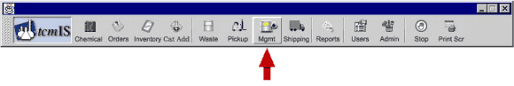
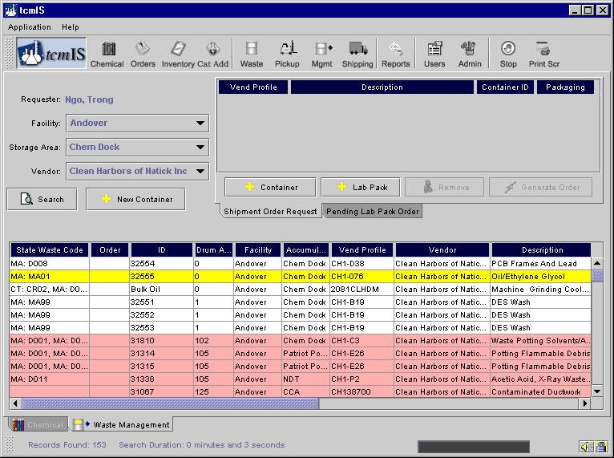
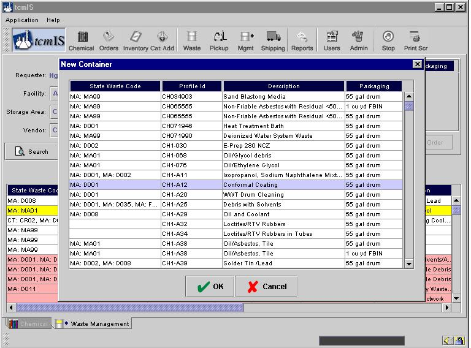
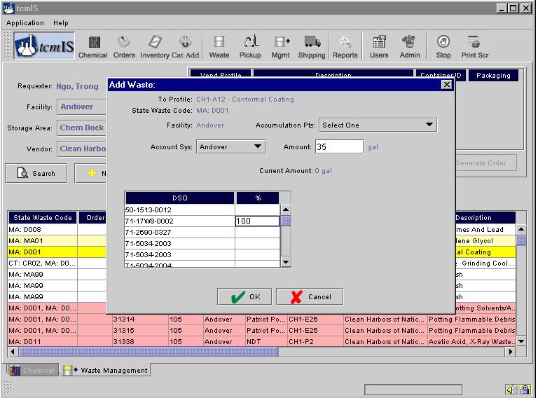
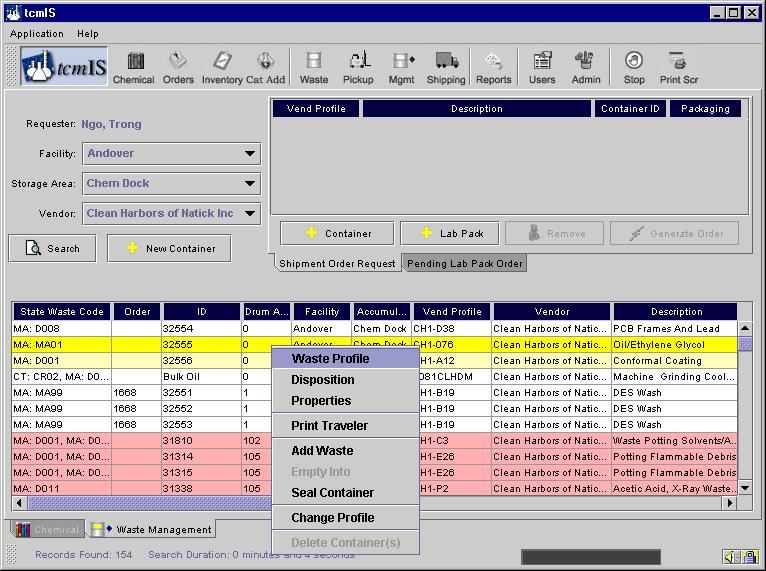
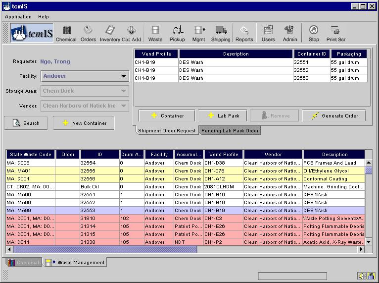

Waste Management (Storage Management)
You can get to this screen by clicking on the button named as Mgmt shown below.

The Waste Management screen is used by the90-day storage areamanager to prepare a waste shipment for submittal to the CGMP waste supplier. The Waste Manager can view wastes in the storage area and view those selected for shipment to a specific supplier. Although the CGMP waste supplier will provide pre-printed labels and shipping documents, various shipping forms can be generated on tcmIS, as can proper labeling.
The figure below shows all waste containers in the 90-day generator storage area. If a container has already been selected for off-site waste shipment but not yet shipped, the order column displays the order number that contains that container. You may go directly to the Order Management screen that contains that container by double clicking on the order cell for that row. If no order number appears then that container is a candidate for shipment. If the container is open and being used for waste consolidation, it will be highlighted yellow. Containers highlighted in red are critical.

A new, open container can be added in the 90-day area, for waste consolidation, by clicking on the New Container button. The figure below illustrates the above.

You can add waste into unsealed containers for consolidating waste into one container. For example, you may be pouring solvents into one 55-gallon drum, or compacting oily absorbents into one 30-gallon fiber drum. You can track the waste you add to the open drum by right clicking with your mouse and selecting Add Into from the drop-down menu. After you click on Add Into, a dialog box comes up (shown in figure below) requesting the charge allocation for the waste you are adding, and the quantity you are adding. When you are satisfied with your entry, click on OK.

You can continue to add waste to an open container as long as it is the same profile number. When the drum is full, or you are ready to seal the drum, right click the mouse on the highlighted line. Select Seal Container from the drop-down menu shown in the figure below.

A dialog box will indicate the date you sealed the container. If you sealed the container on an earlier day, and are just updating tcmIS, you can modify the date to the correct sealing date. The container is now ready for shipment.
To prepare a new shipment order simply highlight a line by clicking with your mouse and clicking the Add button to move the waste into the shipment cart in the top, right of the screen. You can accomplish the same move by double-clicking the line. Figure below shows the results of placing several containers in the cart in preparation for generating a waste shipment order.

Note that bulk and containered waste can be placed on the same order. tcmIS will divide the order into as many shipments as required (e.g., all containered waste on one shipment and each bulk on their own shipment).
You can also add Lab Pack to your waste order which will be delivered by the vendor when they are picking up the waste. You can also check on pending lab pack orders by clicking on the tab "Pending Lab Pack Orders"
The completed order can be edited (Add or Remove buttons) or submitted by clicking the Generate Order button. At this point, tcmIS takes the Waste Manager directly to the Waste Order screen. This is used by the Waste Manager to manage each order to the waste vendor.
Details of the waste order screen are described in the Waste order Section.